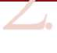
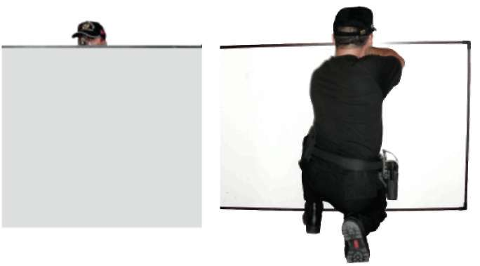
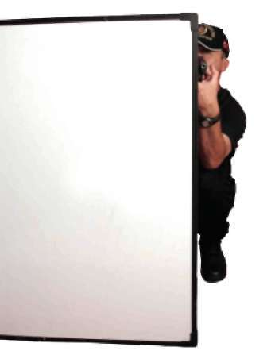
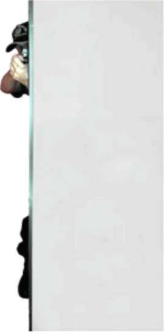
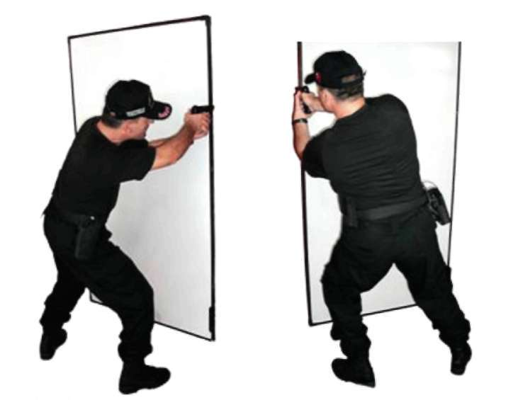

BÖLÜM
İLERİ SEVİYE ATIŞ TEKNİKLERİ
Ateş Etme (Önden Görünüm)
Üstten Ateş Etme (Ön Görünüm) Üstten Ateş Etme (Arkadan Görünüm) Resim-6.e) Sütre Gerisinden Oturarak Atış Teknikleri 61


Sağdan Ateş Etme